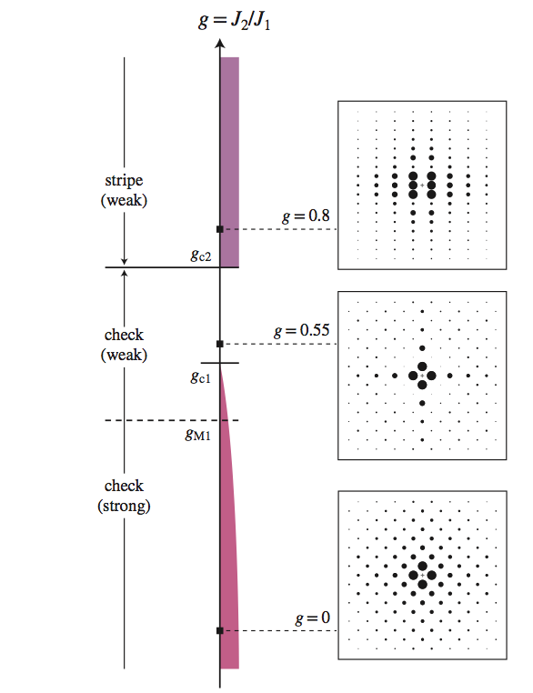
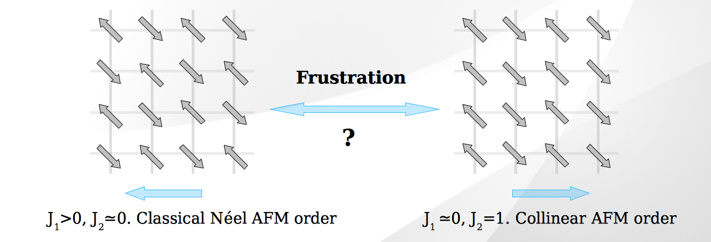

Research interests
Numerical approaches to strongly correlated electron systems; frustrated magnetism;
quantum phase transitions.
Current work
This page will be updated regularly to keep tract of my most recent research progress.Triggering of aftershocks in viscoelastic spring-block models
Xiaoming Zhang and Robert Shcherbakov- Identifying the mechanisms of aftershock generation is an important part in the comprehensive theory of earthquake physics.
The mechanism of aftershock generation remains controversial, and models that yield robust aftershock statistics are still in development.
In this work, several possible models are studied in order to reproduce scaling relations of aftershocks, especially the Gutenberg-Richter law and the Omori's law. We adopt the basic picture of the spring-block model, and introduce the crustal relaxation process during the stress redistribution and the global loading. This is implemented by incorporating viscoelastic interactions in the system: the viscoelastic transmission and the viscoelastic driving.
The viscoelastic transmission mechanism features an instantaneous response of the stress transmission, which immediately leads to an avalanche followed by the relaxation. The viscoelastic driving mechanism features an instantaneous stress drop, which is later partly restored by the crustal relaxation. We combine the two mechanisms, and find that the dynamics of the system is determined by three parameters, the elastic transmission parameter alpha, the relaxation time of the viscoelastic driving tau_L, and the relaxation time of the viscoelastic transmission tau. Different with the elastic spring-block model, avalanches can be triggered either by the global loading or by the relaxation in this combined viscoelastic spring-block model. The triggering of aftershocks by relaxation depends on the competing of the two mechanisms, more specifically, by the ratio of tau and tau_L. When tau < tau_L, aftershocks can be triggered by the relaxation process.
- This work is presented at AGU 2013 Fall Meeting (Abstract# NG11A-1581). The poster can be downloaded here.
Frustrating antiferromagnetic exchange interactions enhance specific valence-bond-pair motifs
Xiaoming Zhang, Jin Xu and K. S. D. Beach- We present variational results for the ground state of the antiferromagnetic quantum Heisenberg model with frustrating next-nearest-neighbour interactions. The trial wave functions employed are of resonating-valence-bond type, elaborated to account for various geometric motifs of adjacent bond pairs. The calculation is specialized to a square-lattice cluster consisting of just sixteen sites, large enough that the system can accommodate nontrivial singlet dimer correlations but small enough that exhaustive enumeration of states in the total spin zero sector is still feasible. A symbolic computation approach allows us to generate an algebraic expression for the expectation value of any observable and hence to carry out the energy optimization exactly. While we have no measurements that could unambiguously identify a spin liquid state in the controversial region at intermediate frustration, we can say that the bond-bond correlation factors that emerge do not appear to be consistent with the existence of a columnar valence bond crystal. Furthermore, our results suggest that the magnetically disordered region may accommodate two distinct phases.
- Submitted to Phys. Rev. B. (Arxiv link)
Resonating valence bond trial wave functions with both static and dynamically determined Marshall sign structure
Xiaoming Zhang and K. S. D. Beach- We construct energy-optimized resonating valence bond wavefunctions as a means to sketch out the zero-temperature
phase diagram of the square-lattice quantum Heisenberg model with competing nearest- (J1) and next-nearest-neighbour (J2)
interactions. Our emphasis is not on achieving an accurate representation of the magnetically disordered intermediate phase
(centred on a relative coupling g = J2/J1 ∼ 1/2 and whose exact nature is still controversial) but on exploring whether and
how the Marshall sign structure breaks down in the vicinity of the phase boundaries. Numerical evaluation of two- and four-spin
correlation functions is carried out stochastically using a worm algorithm that has been modified to operate in either of two
modes: one in which the sublattice labelling is fixed beforehand and another in which the worm manipulates the current labelling
so as to sample various sign conventions. Our results suggest that the disordered phase evolves continuously out of the (pi,pi)
Neel phase and largely inherits its Marshall sign structure; on the other hand, the transition from the magnetically ordered
(pi,0) phase is strongly first order and involves an abrupt change in the sign structure and spatial symmetry as the results of
a level crossing.
  - Published on Phys. Rev. B. (Link)
Journal tools
arXiv searchGoogle Scholar Search